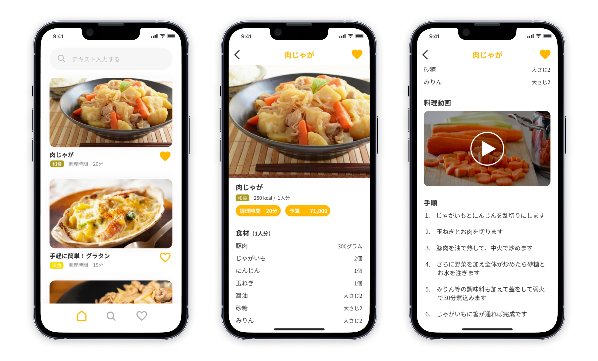

料理レシピアプリ

- ■コンセプト
- 「節約のために自炊したいけどあまり時間がない人」が「すぐ作れるレシピを見つけられる」アプリ
- ■制作期間
- 1日
- ■雰囲気
- シンプル・やわらかい
- ■ターゲット
- ２０代 女性 会社員
少ない材料でさっと晩ごはんを作りたい。また動画を見ながら作りたい。
いつも仕事で２０時頃退社、最寄り駅にある一人暮らし用のスーパーで食材を買って帰宅する。
- ■作品について
-
料理コンテンツが映えるようシンプルにベースを白色、ポイントとなる部分には食べ物によく使われる暖色のオレンジカラーで統一しました。コンセプトの「短時間ですぐに作れる・節約」を知ることができる調理時間と材料のコストをラベルで表示しました。
また、必要食材→動画→料理手順という自炊の流れに沿って構成したところがポイントです。